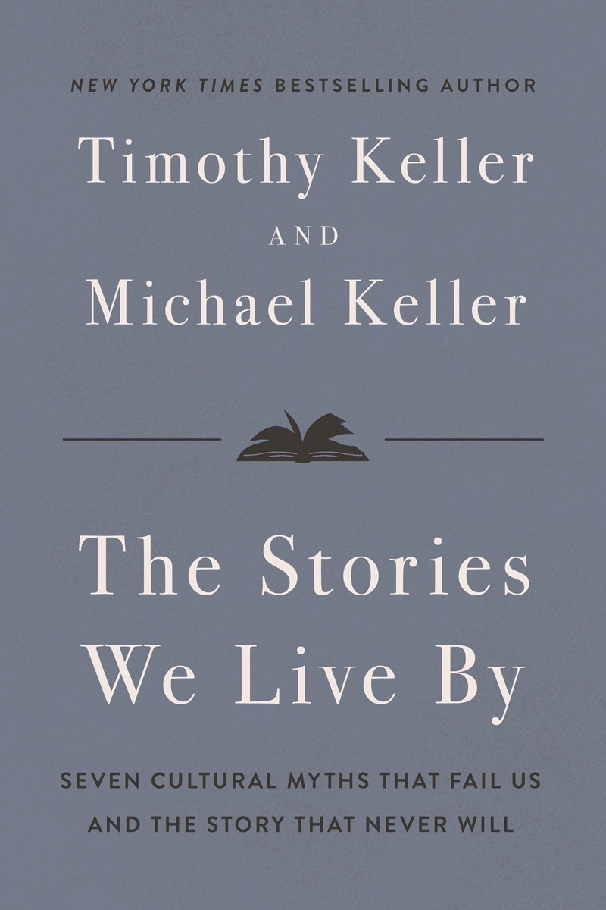

Seven cultural myths that fail us and the story that never will

Tim Keller and his son Michael, a pastor at Redeemer Lincoln Square in New York, talked for years about writing this book together. Then Tim died of cancer. He left an outline, the seven chapters, and more than forty thousand words of notes. Michael finished it in the months of grief that followed, so the book is two things at once: a careful map of the beliefs modern people absorb without noticing, and a son working out whether any of those beliefs can hold the weight of his father's death. "Dad" is quoted throughout, and Michael adds his own stories.
Zondervan, 2026 · Introduction, 10 chapters, epilogue · ~250 pages · Dedicated "To Dad—who knew where the stories point. And for those still seeking."
"You are the stories you believe."Tim Keller, while he and Michael were puzzling over why a culture that says "be free" puts such pressure on everyone to conform
Introduction · The hospital chair
Platitudes are stories too
Michael spent the last lucid night beside his father in a hospital chair "pretending to be a bed." Tim asked him to pray the Lord's Prayer, say the Apostles' Creed, read Psalms (he read all 150 every month). "I'm ready to see Jesus… Send me home." Three days later he died.
Afterwards, kind people offered what our culture has: He's in a better place. He'll always be with you in spirit. Time heals all wounds. "Each phrase crumbled under the weight of real loss." Michael realised these weren't just phrases; they were small stories carrying hidden beliefs about how life works. And he realised his father's prayers that night weren't a distraction either. "When he said 'our Father' he was thinking about the true Father." He was placing himself inside the story he lived by. So Michael asked himself: What are the stories I'm living by?
The question behind the book. As "be true to yourself" and "follow your heart" have spread, depression, anxiety and loneliness have risen with them. A College Board survey of nearly 829,000 high-school seniors found zero rated themselves below average, and 25 percent put themselves in the top 1 percent. "We are more ready to believe the story we have told ourselves about ourselves than we are to believe reality itself."
How a cultural narrative works
It isn't argued; it's assumed. It arrives as what "all enlightened people know." Cultural narratives are "like a pair of glasses we have worn for so long that we've forgotten they exist." Tim said they are "more caught than taught."
It answers a big question so you never have to ask it. Robert Bellah's nurse Sheila calls her faith "Sheilaism… just my own little voice." Surveys: 91 percent of Americans say "to find yourself, look within yourself," and close to three in four Christians agree.
Everyone remixes. Only 7 percent of Americans call themselves atheist or agnostic; 72 percent of the religious "nones" still believe in a spirituality they design themselves (Tara Isabella Burton's "Remixed"). Even CrossFit and a ten-step skincare routine carry hidden stories of what saves us.
It always has a plot. In Tim's words: "Something has knocked life off-course and kept things from being as they should be." The stories differ on what went wrong and who the hero is.
It decides what feels plausible. When church kids say "love is love" about premarital sex, a Bible verse won't move them; a deeper story already has.
The goal isn't just to name seven narratives, but to ask why they aren't working. Tim liked Alasdair MacIntyre's test: the story that wins is the one that can include its rivals within itself and tell the story of why they were told. "Our cultural narratives… only work in the absence of suffering. But when the storms hit, they fail, precisely when we need them most."
Chapter 1 · You have questions, your culture has answers
Redraw the owl
At a Tolkien exhibition at the Morgan Library, what moved Michael most was a small drawing of an owl. Tolkien's son Michael had nightmares about "Owlamoo," a sinister owl that perched on high furniture and glared. Tolkien didn't mock the fear. He asked his son to describe it, drew it exactly, and then coloured it in bright, cartoonish colours, to "rob [it] of terror." He entered the story and changed its ending. The book wants to do the same with our culture's stories: take their longings and fears seriously, and redraw them.
The secular story, mapped onto life's questions
Tim summarised the story most Western people breathe without thinking:
Who are we?
Products of physics and biology, not design. So we can be whoever we choose.
What's wrong?
Outside forces and people keep us from controlling our own destinies.
What puts it right?
Everyone free to be who they want, as long as they do no harm.
How do we get there?
Everything is power, so use power to get justice for ourselves and our people.
How do we know?
History is moving toward freedom and away from religion; science solves our problems. All other truth claims are constructions used to oppress.
Underneath all of it lies one baseline: there is no authority outside the self, and life will go well only when society recognises this. That works itself out as seven stories, which "interlock and reinforce one another" and also contradict each other. The identity story says trust your inner self; the power story says your inner self is a product of privilege. The freedom story says do what you like if you harm no one; the identity story says not affirming me is harm. "Trying to live in the midst of these contradictions is exhausting."
The Lion King runs several at once: "remember who you are" (identity), Scar seizing Pride Rock (power), "hakuna matata" (happiness), the restored Pride Lands (progress).
Three lenses for testing any story
What does it call the ultimate good and the ultimate evil? Every story puts something good but fallen in God's place, and blames something good but fallen instead of sin.
Is it the fullest story? Narratives "truncate": they take one real good, like freedom or justice, and view all of life through it.
Does it have the greatest explanatory power? Ivan Illich: tell a story "so persuasive that it sweeps away the old myths," one "so inclusive that it gathers all the bits of our past and our present into a coherent whole."
And a reframing: nobody is neutral. "The scientist cannot prove her memory or cognitive faculties work without first assuming that they do… We can't empirically prove the thesis that we should only believe what we can empirically prove!" The question is no longer "Can you prove your religion?" but "Which set of unprovable assumptions makes the most sense of reality as we actually experience it?"
Chapters 2–8 · The seven stories
Open each story
Every chapter follows the same pattern: the story and why it moves us, what it gets right, where it cracks under real life, and how the Christian story completes it rather than simply rejecting it.
Identity
"You have to be true to yourself."
Look inward, find your feelings and desires, build your identity from them, and perform it publicly. Anyone who questions it attacks your existence.
In Fantastic Beasts, a boy forced to suppress his magic produces a black cloud of destruction; the film doesn't argue that suppression is dangerous, it assumes we all know. A New York Times reviewer finds Joan of Arc tedious: "Where's the suspense, the conflict, the drama in such single-mindedness?" Moana's "voice inside" beats her father's tradition. Traditional cultures built identity "outside-in" (MacDonald = son of Donald); ours builds it "inside-out." Charles Taylor: before the late eighteenth century, nobody thought "there is a certain way of being human that is my way."
What it gets right
Michael's great-grandfather was born in Italy in 1880 to a line of potters. His only options were potter, priest or soldier, and the next town would know his family. So he went to America. "How many potential composers were forced to be blacksmiths?" This story has freed millions from caste. Any critique must not try to roll that back.
Where it cracks
Too fragile. Gen Z, the most authenticity-minded generation, reports the most imposter syndrome. An achieved identity must be performed "24/7, and if the audience boos… the failure rests entirely on us." Taylor: we always define ourselves "in dialogue with" others. So we chase likes while claiming not to care.
Incoherent. Which is the real me, "Peanut Butter Mike at 10:00 p.m." or "Salad Mike at lunch"? A friend gave up his girlfriend to join the CIA and still wonders if that was his deepest desire.
It hides a moral framework. Tim's thought experiment: an Anglo-Saxon warrior in AD 800 feels aggression and same-sex attraction, embraces the first as "that's me" and suppresses the second. A young man in Manhattan with the same two impulses does the exact reverse. Both think they're being true to themselves; both are being true to their culture's grid.
Exclusive. "I'm glad I'm not like those…" needs a "bad person" to define the good one, just like the Pharisee's prayer. And when disagreement means denying my existence, real friendship becomes too risky.
How the Christian story completes it
Paul refuses both options: "I care very little if I am judged by you… indeed, I do not even judge myself. It is the Lord who judges me" (1 Corinthians 4:3–4). A Christian identity is received, not achieved. It levels everyone (all sinners saved by grace), needs no one to look down on, and can take criticism. "Now… the person who adores you is the one you adore." Christianity isn't "a vitamin supplement" added to your other sources of worth; it replaces them.
Sam and Jim. Two aspiring actors at Redeemer audition for the same big role; neither gets it. Jim, who seemed more confident, is devastated, leaves acting and drifts from job to job. Sam, who had been moving toward Christ, is "just disappointed," goes into business, acts on the side, and thrives. Acting had become "a good thing but not an ultimate thing." At the end, Tim needed no audience: "The world told him to be true to himself, but he had found something truer than himself to be true to."
Power
"The only way to bring change is to take power from the 'bad' and give it to the 'good.'"
Everything is about who has power. Truth claims are power moves. Justice means redistributing power to the oppressed.
On a walk through Riverside Park with a neighbour and his dog, the friend teased: "Don't you go and try to convert me." Michael: aren't you trying to convince me not to convince you? "Okay, I see your point… But I still don't want you to proselytize me!" Someone's vision always wins. Older liberalism (Lord Acton: "power tends to corrupt") diffused power through checks and balances. Nietzsche and Foucault made power the only reality: "This world is the will to power—and nothing besides!"
What it gets right
Rosa Parks, the Berlin Wall, the labour movement that ended child labour and fourteen-hour days, disability rights. Unmasking hidden power and holding abusers to account is good. The story taps a real longing for fairness.
Where it cracks
It refutes itself. If all metanarratives are power grabs, so is that one. Terry Eagleton: our age is just as "exclusive and censorious." And without an outside moral standard, the oppressed can't even say the oppressor is wrong.
It makes forgiveness impossible. If everything is power, every handshake is a trap, and a victim who forgives is "victimized twice." Only endless retaliation remains.
It demands a performance. Almost no one identifies as an oppressor, so you must constantly prove you're oppressed or a loud ally. Activist Frances Lee: "When I was a Christian, all I could think about was being good… A decade later, I feel compelled to do the same things as an activist… And it's exhausting."
It breeds new domination. Doxxing, cancellation, "conflict entrepreneurs," and the gaslighting loop: "You're gaslighting me!" "No, you're gaslighting me by accusing me of gaslighting!" The oppressed become the new oppressors, as in the French Revolution.
How the Christian story completes it
From Genesis on, God picks the younger son (Abel, Isaac, Jacob, Joseph) and the overlooked woman (Sarah, Leah). That could look like mere reversal. But revolutions only flip the pyramid; "the pyramid remains." The Bible subverts it. Jesus, "being in very nature God… made himself nothing" (Philippians 2). In John 13, knowing "the Father had put all things under his power… so he got up from the meal" and washed feet, including Judas's and Peter's. That gives both sides a way forward: the oppressor can be forgiven through repentance, and the victim is not defined by the wound. Miroslav Volf: forgiveness founders because "I exclude the [other] from the community of humans even as I exclude myself from the community of sinners."
The upshot. "Since I have been served, now I serve." The cross "doesn't eliminate power; it redeems it." And Christianity accounts even for its own abuse: Israel was told not to oppress foreigners, "for you were foreigners in Egypt," because God knew the oppressed would one day oppress.
Freedom
"Live free, just do no harm."
Freedom means no one tells you how to live. The fewer constraints, the freer. The only sins are intolerance and limiting someone else.
In I, Robot, Sonny stands alone on a hill, free to invent his purpose. Three Supreme Court justices (O'Connor, Kennedy, Souter) gave it creedal form: "At the heart of liberty is the right to define one's own concept of existence, of meaning, of the universe." Isaiah Berlin called this "negative freedom." Modern culture treats us like helium balloons. "But is this really freedom? Or is a balloon without a tether simply lost?" Aldous Huxley admitted he embraced meaninglessness because it was "an instrument of liberation, sexual and political."
What it gets right
It comes from the memory of every slave ship, prison camp and silenced voice. Freedom from oppression is a real good, and the desire for it is deeply human.
Where it cracks
"Harm" can't be agreed. Is private pornography harmless? Is out-competing your business "just business"? Defining harm needs a view of human nature we no longer share, and the argument slides back into power.
It fails common sense. A woman with high cholesterol must give up eating anything she likes to keep the freedom to play with her grandchildren. Trumpeter Rafael Méndez: "scales, scales, and more scales." Michael gave stressed students a blank page for twenty-four hours and let them discover they couldn't fit everything in. Real freedom is choosing the right constraints.
It fails love. Françoise Sagan: she was "obviously less free when I was in love." Elsa sings "No right, no wrong, no rules for me. I'm free" while building a fortress of isolation. By 2024 half of American adults reported loneliness; the Surgeon General compared its mortality risk to fifteen cigarettes a day. One startup spent $1.8 million of its $2.5 million seed money on the domain friend.com for an AI pendant.
How the Christian story completes it
Tim: "If a fish jumps out of its fishbowl, it will flop around and gasp… What, then, is the water for the human soul?" Not the traditional idol of the group either. David Foster Wallace: "Everybody worships. The only choice we get is what to worship." The answer is love: a triune God whose being is self-giving love made us for relationship, so "we are only free when we are bound in committed love." And Jesus is the one master who won't abuse that bond, because he gave up his own freedom to bind himself to us. "If the Son sets you free, you will be free indeed" (John 8:36).
Screenshots. After his father died, Michael searched his old texts and voicemails for the word "proud" and found it more than ten times. "Michael, I'm proud of you." He saved them all and goes back to them. "What if I were to hear in the depths of my soul that the Father of all creation is proud of me?" In Ted Lasso, six-year-old Phoebe describes her washed-up footballer uncle Roy: "His beard is scratchy. He buys me ice cream. He swears a lot. He's really funny. And I love him." Nothing about his performance.
Morality
"Morals are socially constructed, and we should work for justice."
Moral feelings come from evolution and culture, so there are no absolutes. Also: everyone has equal rights, so we must fight for justice.
At a coffee shop near NYU, a young woman leaned over: "We all know what's right and wrong, so what's the point [of God]?" Michael asked where her morals came from. "They're just right for us. They're ours." When he asked why anyone else should follow them: "If you have to ask that question, it shows you aren't very moral." She didn't need "dead guys" to tell her how to live. She was stuck, and she knew it.
What it gets right
Charles Taylor: "We live in an extraordinarily moral culture." Caring about homelessness, abuse and injustice is good, and the story rightly remembers how rigid moral codes made insiders and outsiders.
Where it cracks
No obligation. Professor Mari Ruti believes values are socially constructed, yet insists gender equality must hold everywhere. On what grounds? Tim: a moral feeling says "I feel this is wrong"; an obligation says "you ought not, even if you feel it's fine." "There has never been a society before in history that said there's such a thing as moral obligation but there's nothing outside of this world." You can't call a watch good or bad by hitting it with a hammer; you judge it by its purpose. Without a purpose for humans, "good" and "bad" mean nothing.
No motivation. Yale law professor Arthur Leff: say napalming babies is evil, and the cosmos answers, "Sez who?" Majorities once accepted slavery. And on an island of happy slaves, slavery would still be wrong. So we shame and cancel instead: "You do you, but if you don't do it the way I approve, I'll cancel you."
No cohesion. A Manhattan private school's head stepped down over Gaza, with every side claiming victimhood. During COVID a Times writer confessed "an overdraft on my outrage account" and longed for moral authority. An anthropologist objecting to how women were treated was told her rights-talk was Western imperialism.
How the Christian story completes it
Tom Holland's Dominion: the heroes of the Iliad "scorned the weak." Hospitals for strangers, weekly offerings for the poor, the first principled condemnation of slavery: these came from Christianity. Our moral intuitions are the law "written on [our] hearts" (Romans 2:15), cut off from their root. But doesn't a moral absolute crush people? Not this one. Tim: the cross says justice is so inviolable that God's Son had to die, and also that we are the perpetrators of the greatest injustice, and forgiven. That sends you out caring about justice "with a merciful, gracious, humble attitude." The homeless addict? That's me. The cruel boss? That's me.
"Jesus died for that failure too." A woman kept breaking her own plans to serve the poor. Michael's campus minister didn't say try harder; he said grace covers that too. Weeks later people all over town reported her serving. "I figured, What do I have to be afraid of then?" Tim sang along under his breath at The Music Man, where Marian sees the con man Harold Hill "warts and all" and loves him, and he stays and is changed.
Truth
"Science and reason alone can tell us what is true and can fix our problems."
Religion is private opinion; science is public fact. Follow the science and it will settle our debates and save us.
Stanford tried to drop the word "American" from campus communications, citing research; opponents cited other research. "Both sides claimed to be 'following the science.'" The story runs: Dark Ages of superstition, then brave pioneers of reason, now an era of objectivity, if only we'll keep religion out of the public square.
What it gets right
Medicine, longer lives, eradicated diseases, real wonder. One study found that the smell of women's tears reduced male aggression by 44 percent, something no one would know without the scientific method.
Where it cracks
Facts versus opinions is too simple. Philosopher Justin McBrayer found a second-grade poster: "Fact… can be tested or proven. Opinion: What someone thinks, feels, or believes." But things can be true without proof (love, beauty), and "proven" things turn out false. In the 1920s mainstream progressives backed forced sterilisation as settled science.
It can say what is, never what ought to be. Michael Sandel shows the pro-choice position isn't neutral; it assumes the fetus lacks full moral status. A biologist can time a heartbeat to the hour but can't tell you its moral weight. Divorce law depends on what you think marriage is for. Tim: "Science can tell you what you can do and how to do it efficiently, but it can never tell you whether you ought to do it." Using it for moral truth is like "using a metal detector to find plastic."
It is naive and deceptive.The Matrix: we can't use our senses to prove our senses. Thomas Nagel: if unguided evolution made us, it selected for survival, not truth. And "keep religion private" is itself a faith-based claim smuggling in its own values. Three million peer-reviewed studies a year can support almost anything.
How the Christian story completes it
Holland again: China had gunpowder, the compass and advanced metallurgy, but no idea of a lawgiving Creator, and its calendars stayed error-ridden. Science took off in a Christianised Europe that expected an orderly world from an orderly God. Psalm 104 pictures creation sustained moment by moment, regular because God is faithful. The resurrection adds the rest: this physical world has a future, so "matter matters." Without it, science is "polishing brass on the Titanic."
"I'm looking forward to coming back here." A friend said this at his father's graveside as the casket went down. "Today this is a cemetery… But one day, because of Jesus' resurrection, this will be the place of the greatest victory." Against Steven Weinberg's "the more the universe seems comprehensible, the more it also seems pointless," set Bill Bryson: unpacked, your DNA would stretch ten billion miles, beyond Pluto. Science that says "thank you" and "show us more."
Happiness
"Figure out what makes you happy, then don't let anyone stop you from getting it."
Identify what blocks you, decide what will fulfil you, remove the structures in the way. "Don't I deserve to be happy?"
Michael watched Star Trek with his father, who would raise an eyebrow and say "Fascinating" like Spock. So the 2009 reboot is a surprise: old Spock tells young Spock, "Put aside logic; do what feels right." Truman walks out through the wall of his set. Biohacker Bryan Johnson: "I sold my company, got a divorce, left my religion… from a state of constant depression to just constant delight." Jonathan Haidt notes that ancient wisdom said the opposite: change your desires, not your circumstances. YOLO is the real anxiety underneath.
What it gets right
Food, shelter, safety and deep relationships really do make people happier. This world and our bodies matter, suffering should be fought, not just endured, and we're not stuck: we can act.
Where it cracks
Shallow. Jim Carrey wishes everyone could get rich and famous "so that they could see that it's not where you're going to find your sense of completion." Cynthia Heimel watched friends become stars: God's "rotten practical joke" is to grant your deepest wish. Madonna: "Even though I've become somebody, I still have to prove that I'm somebody." And materialism deflates even good moments: if beauty is just neurons firing, Bernstein's sense after Beethoven that "something is right in the world" evaporates.
It can't cope with suffering. Haidt and C. S. Lewis see three endings when created things carry our happiness: you never get it; you get it and it doesn't satisfy (worse, because there's no "if only"); or you get it and lose it. When a gunman killed five Amish schoolchildren at Nickel Mines in 2006, the community visited his widow within hours and many went to his funeral. Their story had room for loss.
Self-focused. Jean Twenge links rising anxiety to the fixation on self-fulfilment. Everyone chasing their own happiness collides with everyone else.
How the Christian story completes it
A pastor in Hawaii: "Everyone knows they should be happy because they're in paradise. But they know they're not happy." Lewis: "If I find in myself a desire which no experience in this world can meet, the most probable explanation is that I was made for another world." The problem isn't loving things too much but loving God too little: disordered loves. Make your family your god and you'll crush them. Jesus doesn't hand out bread; he says "I am the bread of life," the grain that dies so we live. Hebrews 12:2 says he went to the cross "for the joy set before him." "What is his joy and happiness? You and I are."
Three questions to find disordered loves. What makes you most anxious? Where does your mind go when it wanders? What do you spend money on most freely? In his last years Tim became "both less driven and more focused," with a lightness Michael can only now name: "He was not… a man who had learned to love less; he was a man who had learned to put his love in the right order." Lewis: "Aim at Heaven and you will get earth 'thrown in': aim at earth and you will get neither."
Progress
"Be on the right side of history."
History moves steadily toward liberty and prosperity and away from religion and oppression. Each generation should live better than the last.
Obama used the phrase fifteen times in office, Clinton twenty-one; Reagan used it too. Disney's Carousel of Progress sings "There's a great big beautiful tomorrow." Hamilton pulses with it ("I am not throwing away my shot!") and ends asking "Who lives, who dies, who tells your story?" Sociologist Robert Nisbet traces the very idea of linear progress to the Bible. Tim: we want "the kingdom without the King."
What it gets right
Life expectancy has more than doubled since 1800. A child born in 1820 had about a 40 percent chance of dying before five; now it's under 5 percent. Extreme poverty fell from over 90 percent to under 10; literacy rose from about 10 to over 85 percent. These are real and worth celebrating. So why are suicide rates up and Gen Z so hopeless?
Where it cracks
No shared definition. One side's progress (renewables, DEI) is the other side's regression. Each sees the other as ruining the world.
Too optimistic about human nature. C. E. M. Joad, a famous atheist, wrote The Recovery of Belief after the Holocaust: he and his colleagues had dropped "evil" from their vocabulary. Radio broadcast propaganda; flight delivered bombs. "The progress story mistakes tools for virtues."
No answer to injustice. Volf, from the Balkan wars: "I would have to rebel against a God who wasn't wrathful at the sight of the world's evil." Nonviolence as a God who refuses to judge is a thesis born "in the quiet of a suburban home." Only if a Judge exists can you lay the sword down.
No answer to death. Peter Kreeft's story: a mother tells her seven-year-old that his dead cousin is fertilising next spring's flowers. "I don't want him to be fertilizer!" Kathy Keller: "As great as human progress is, the death rate for every person born is still 100 percent."
How the Christian story completes it
Not the ancients' O-shaped cycle, not the modern J-curve, but a V: down before up, like Joseph, Jacob, Job and Jesus. The Christian story is more pessimistic than the progress story about human nature (only the death of God's Son could fix us) and more optimistic about the end (God will renew everything). So no human programme carries our ultimate hope, and no bad news drives us to despair.
Two dreams. Six months after the death, Michael dreamed his father had been saved in an experimental frozen chamber and walked through the door, "the purest joy I had ever felt." A falling picture frame woke him. He called Dad's phone; it rang three times. Decades earlier Tim had dreamed his whole family had died, and woke flooded with gratitude. "My dad woke up from a nightmare… I woke up from a beautiful dream, only to return to the nightmare." The Christian hope answers Sam Gamgee: "Is everything sad going to come untrue?" Yes. D. L. Moody: "Some day you will read in the papers that D. L. Moody… is dead. Don't you believe a word of it!"
Try it
Which story is talking?
The narratives reach us as everyday phrases. Name the story behind each line.
Chapter 8 · The shape of history
O, J, or V
O · the ancientsAn endless cycle. "Nothing new under the sun."J · modern progressEvery generation better than the last. No room for loss.V · the gospelDown before up: death before resurrection. Philippians 2.
"If God can take the worst moment in history, the death of his Son, and turn it into the greatest moment of redemption, he can take our pain and suffering and weave them into something beautiful." A creation "shattered but then remade" ends up more beautiful than one never broken: "the scars become part of the beauty."
Chapter 9 · Applying the gospel story
Affirm, critique, redirect
Knowing a narrative is incomplete doesn't free you from it. Tell yourself "don't think of pink elephants" and you'll see one. The Scottish preacher Thomas Chalmers called the way out "the expulsive power of a new affection": an old love is only driven out by a more beautiful one. The Christian story "doesn't just critique our stories; it completes them." That rules out both withdrawal (culture is all bad) and assimilation (culture is basically fine). Every culture reflects God's goodness, and every culture turns good things into ultimate things.
01AffirmJews want signs, Greeks want wisdom. Paul says yes: power and wisdom belong to God himself.
02CritiquePower without love is tyranny; wisdom without grace is pride. Both made a good thing ultimate.
03Redirect"Christ the power of God and the wisdom of God" (1 Corinthians 1:24): the cross, in a form that breaks both categories.
Paul did the same at Athens (Acts 17): walked around and looked at their altars, quoted their poets, critiqued from within, pointed to Jesus. Jesus did it in the Sermon on the Mount: "You have heard that it was said… But I tell you." Love your neighbour, yes; now your enemy too.
Baptised assimilation. An ad for girls' education in developing countries began by rightly indicting patriarchy, then quietly swapped in the Western story of the self-actualising individual ("A girl is not defined by what her society sees"), when it could have said a girl has inherent dignity. Unexamined, we read the Bible through our culture's grid. "This kind of baptized assimilation is more dangerous than simple unbelief."
With your family
Before he died, Tim was writing a fifty-two-week catechism for teenagers called You Have Heard It Said. Every topic asks four questions:
What is the belief we are examining?
How does it make us different from our cultural stories?
How does it change how we live now?
How does it shed light on the gospel?
"You're so smart, you can do anything" quietly catechises a child into expressive individualism. Root morals in the story instead: "Because Jesus forgave us, we forgive." "Because Jesus was generous with us, we give our money away."
Michael mutes the TV ads and asks his teenagers what's being sold and with which images. Eye rolls, but accurate answers.
A father whose daughter insisted on "expressing herself" in an outfit he thought inappropriate put on an equally unsuitable outfit for his "middle-aged dad bod." "It's a free world. I'm expressing myself." She dropped the argument.
At dinner: what cultural story did you hear this week? What can we affirm in it, what's wrong with it, and what completes it?
At work
Churchgoers spend 100–150 hours a year in church and over two thousand at work, a 20:1 ratio. Thirty-two of Jesus' thirty-seven parables involve work. "We must breathe to live. But we don't live in order to breathe." Profit is breathing for a business, not its reason to exist. Ask what your company really serves, and treat the difficult employee with the same dignity as the star performer, because both bear God's image. James Davison Hunter's "faithful presence": the garbage collector who picks up trash with care is already part of the renewal of creation.
With yourself
Take fifteen minutes at the start of each week. "Our emotional responses and patterns are often the smoke revealing the stories that are firing our lives." These are the book's four questions; your answers stay on this device.
Saved on this device only.
For conversations, Joshua Chatraw and Mark Allen's Apologetics at the Cross adds a first step: stop, look and listen until you can state the other person's story to their satisfaction. Then affirm, critique from within, and redirect. And don't turn this into a performance: "our standing before God isn't based on our performance in the arena of cultural discernment."
What makes the Christian story compelling
A beauty that lasts. Beauty is real because it's rooted in God, which is why we can't help applauding at the end of a concert.
A love that leads to flourishing. Jonathan Edwards: the Trinity as "the fountain of love" that "overflows in streams and rivers of love and delight… so as to overflow the world as it were with a deluge of love."
A resolution to guilt and shame. It tells true guilt from false. "Jesus had to die for us, but he was also willing to die for us": we neither minimise nor maximise our shame.
A Person. Not a code or a set of practices. "I am the way and the truth and the life."
Chapter 10 & epilogue · Completing our stories
I want my father back
One year to the day after the death, Michael had to preach on praising God and could barely do it himself. He turned to a funeral sermon Jonathan Edwards preached in 1741 for his own uncle, The Sorrows of the Bereaved Spread Before Jesus. To the children Edwards said:
"You will no longer have your father's wisdom to guide you, his tender love to comfort and delight you… But in the blessed Jesus, your father's Lord and Redeemer, you may have much more than all those things. Your father's virtues that made him so great a blessing to you, were but the image of what is in Christ."Jonathan Edwards, 1741
Watching The Princess Bride with his kids, Michael cried for the first time at a scene he'd seen a dozen times. Inigo Montoya, sword at the six-fingered man's throat: "Offer me money… Offer me everything I ask for." "Anything you want." "I want my father back." Earlier the film says, "Death cannot stop true love. All it can do is delay it for a while." Without the resurrection, that's a fantasy. With it, "it is literally true… I will get my father back."
Real, not useful. A successful man in his thirties asked if he could keep the prayers and morals without believing them. "Sure… When my girls were little, they liked to play make-believe too." "Christianity isn't real because it works…; it works because it's real."
"Look." In a snowstorm in 1850, fifteen-year-old Charles Spurgeon ducked into a tiny chapel where a shoemaker filled in for the absent minister on Isaiah 45:22. "It ain't lifting your foot or your finger; it is just 'look'… Young man, you look very miserable… look to Jesus Christ."
Three ways to put your story in his. Gaze at Jesus in Scripture, prayer and community until "God so loved the world" lands in the heart. Live in real community and serve. And see your story completed in the story to come, where everything sad comes untrue.
Before he died, Michael asked his father how the gospel moves from the head to the heart. Tim's answer is in the epilogue. Everyone lives for something; if not God, that's sin, and it brings "a sense of shame and a fragile identity, a deep emptiness… and an inability to face suffering, the future, and death." The remedy is an identity grounded in God's unchanging love, possible only if it rests on Christ's work, not ours. "On the cross, he said, 'It is finished!' not 'Good luck.'"
"Having ideas about a person is not the same as having the person himself."What Michael learned by trying to stay close to his father through his notes
He had hoped that mastering his father's documents would keep him near. "The idea of my father is not my father." And that, he realised, was exactly what his father had always said about Jesus, with one difference: we don't have to wait. Jesus isn't locked in the past, available only through documents and memories.
This story is true. The tomb is empty. Death is defeated. Love wins.
To keep
Seven things to remember
You are the stories you believe. Most of them you never chose; they were "caught, not taught," through films, ads and feeds.
Under the seven stories lies one: no authority outside the self. Each story takes something good and makes it ultimate.
Test any story three ways: what it calls good and evil, whether it's the fullest story, and how much of real life it explains, especially suffering and death.
Identity received is sturdier than identity achieved. Power used to serve breaks the cycle of oppressor and oppressed.
Freedom is the right constraints, not none. Love is the water we were made to swim in.
Engage culture like Paul: affirm, critique, redirect. Only a more beautiful love expels an old one.
Our stories fail when the storm hits. The gospel is the one big enough to hold a father's death and promise his return.